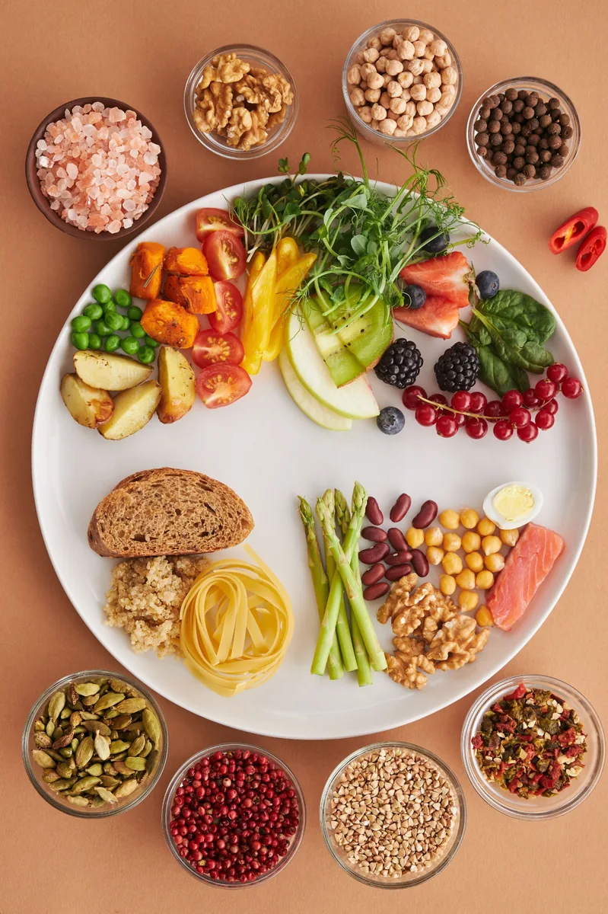
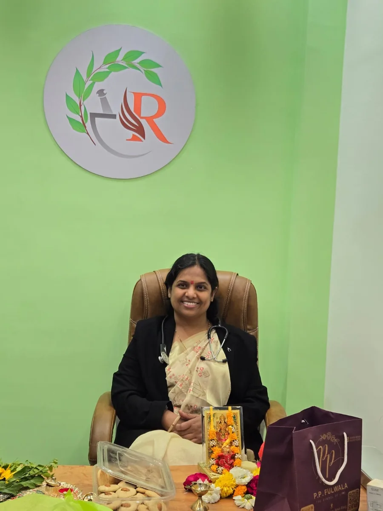

01
Panchakarma
Classical purification therapies tailored to individual needs.
Panchkarma and Yoga-Care
in Rajkot, India.
Healing begins with understanding the person behind the illness.
Balance in body, mind, and lifestyle leads to lasting wellness.
Classical purification therapies tailored to individual needs.
Ayurvedic care through hormonal and reproductive health concerns.
Supporting digestion by restoring internal balance.
Personalized Ayurvedic care for recurring skin concerns.
Helping restore balance in today's fast-moving lifestyles.
Pulse-based assessment used to understand the individual before treatment.
Therapeutic movement supporting recovery, mobility, and balance.

Practical everyday changes that support lasting health.
RIDDHI was built with the care,
responsibility, and devotion
we would give our own family.
Its name reflects prosperity,
growth, and the removal of obstacles.

Consultant
MD Ayurveda | PhD Scholar
MA Sanskrit Vyakarana | Jyotish Pravin
Educated at the renowned Tilak Ayurveda Mahavidyalaya, Pune, and the disciple of the great Vaidya Dr. Dilip Gadgil, Pune. Specialised in Panchakarma, Nadi Pariksha and Yoga-based therapies, with an approach rooted in careful assessment and deeply personalised care.
Availability
Monday, Wednesday & Friday
6:30 PM–8:30 PM
Chief Consultant & Director
BAMS | MD Ayurveda | PhD Scholar
Educated at the renowned Tilak Ayurveda Mahavidyalaya, Pune, and the disciple of the great Vaidya Dr. Dilip Gadgil, Pune. An Ayurvedic physician with more than five years of Cardiac ICU experience and a special interest in preventive cardiac wellness and long-term health.
Availability
Tuesday & Thursday
6:30 PM–8:30 PM
2nd & 4th Sunday
10:00 AM–1:00 PM
Essays on classical Ayurveda, constitutional balance, and mindful health.
Long before miso soup became a wellness buzzword, Suśruta Saṃhitā engineered a meticulous science of liquid foods: Maṇḍa, Peyā, Vilepī, pulse soups, and nourishing broths.
Why does digestive fire weaken during the monsoon? Explore the medical rationale behind Varṣā Ṛtucaryā and how ancient Indian fasting customs reflect digestive physiology.
Reach out to schedule a consultation or speak with the clinic team.
Clinic Hours
Monday–Saturday
6:30 PM–8:30 PM
Sunday by appointment.
RIDDHI Ayurveda Clinic
Shop No. 206, Atulyam Prime,
Morbi Bypass Road, Ronki, Rajkot.